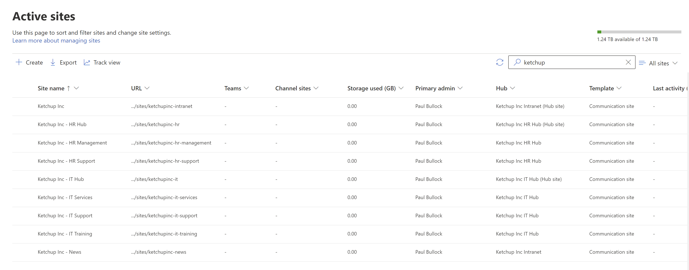

Create a multi-hub set of communication sites
Summary
Want to see how the hub site association works but don't have an large intranet to play with, or looking to build a large multi-departmental intranet. This sample builds 9 SharePoint communication sites, creates three hub sites and associates them to a main hub site; these are empty sites with no content, however you can build on this script or the approach to populate all the sites with example content.

[CmdletBinding()]
param (
[string]$TenantOrg = "contoso",
[int]$TimeZoneId = 2,
[string]$OwnerEmail = "paul.bullock@contoso.onmicrosoft.com", # <email address>
[string]$SiteListJsonFile = "large-intranet-example.json", #use the sample from the JSON tab
$SiteType = "CommunicationSite" # <TeamSite|TeamSiteWithoutMicrosoft365Group|CommunicationSite>
)
begin {
Start-Transcript -OutputDirectory .
# Part
$adminUrl = "https://$($TenantOrg)-admin.sharepoint.com"
# Requires SharePoint Admin Role on your account
Connect-PnPOnline -Url $adminUrl -Interactive
$jsonFilePath = "$($SiteListJsonFile)"
$sites = Get-Content $jsonFilePath -Raw | ConvertFrom-Json
$baseUrl = "https://$($TenantOrg).sharepoint.com/sites/"
}
process {
function GetTenantSite($siteUrl) {
try{
$existingSite = Get-PnPTenantSite $siteUrl -ErrorAction SilentlyContinue
}
catch {
Write-Host " - Site does not exist" -ForegroundColor Yellow
}
return $existingSite
}
Write-Host "Phase 1 - Create the SharePoint Sites" -ForegroundColor Cyan
$sites | Foreach-Object {
$siteUrl = "$($baseUrl)$($_.SiteUrl)"
$siteTitle = $_.SiteTitle
# Check for existing site
$existingSite = GetTenantSite $siteUrl
if ($existingSite -eq $null) {
Write-Host " - Creating new site...."
New-PnPSite -Type $SiteType -Title $siteTitle -Url $siteUrl -Lcid $_.LocaleId -Owner $OwnerEmail -TimeZone $TimeZoneId -Wait
Write-Host " - Created new site"
}
else {
# Site already exists
Write-Host " - Site already exists $($siteUrl)" -ForegroundColor Yellow
}
}
# Phase 2 - Create the Hub Sites
Write-Host "Phase 2 - Create the Hub Sites" -ForegroundColor Cyan
$sites | Foreach-Object {
$siteUrl = "$($baseUrl)$($_.SiteUrl)"
# Check for existing site - for those with the hub association only
$existingSite = GetTenantSite $siteUrl
if ($existingSite ) {
if ($_.CreateHubWithName) {
Write-Host " - Registering site as Hub site " $siteUrl
try{
Register-PnPHubSite -Site $siteUrl
# Update the Hub Title - this can be expanded to include the other options as well
Write-Host " - Updating Hub Title " $siteUrl
Set-PnPHubSite -Identity $siteUrl -Title $_.CreateHubWithName
}catch{
Write-Host " - Site already registered as Hub site" -ForegroundColor Yellow
}
}
}
else {
# Site already exists
Write-Host " - Site does not exist" -ForegroundColor Yellow
}
}
Write-Host "Phase 3 - Associate the sites to the Hub Sites" -ForegroundColor Cyan
$sites | Foreach-Object {
$siteUrl = "$($baseUrl)$($_.SiteUrl)"
if ($_.JoinHubUrl) {
# Check for existing site - for those with the hub association only
$existingSite = GetTenantSite $siteUrl
if ($existingSite) {
$joinHubSite = "$($baseUrl)$($_.JoinHubUrl)"
$hubSite = Get-PnPHubSite -Identity $joinHubSite
if ($hubsite) {
Write-Host " - Joining site to Hub site " $siteUrl " to " $joinHubSite
Add-PnPHubSiteAssociation -Site $siteUrl -HubSite $joinHubSite
}
else {
# Hubsite not found
Write-Host " - Hub site not found" -ForegroundColor Yellow
}
}
else {
# Site already exists
Write-Host " - Site does not exist" -ForegroundColor Yellow
}
}
}
Write-Host "Phase 4 - Associate the sites to the Hub Sites and setup Hub to Hub associations" -ForegroundColor Cyan
$sites | Foreach-Object {
$siteUrl = "$($baseUrl)$($_.SiteUrl)"
if ($_.CreateHubWithName -and $_.AssociateHubToHub) {
# Check for existing site - for those with the hub association only
$existingSite = GetTenantSite $siteUrl
if ($existingSite) {
$hubSiteUrl = "$($baseUrl)$($_.AssociateHubToHub)"
$hubSite = Get-PnPHubSite -Identity $hubSiteUrl
if ($hubsite) {
Write-Host " - Joining site to Hub site to Hub Site" $siteUrl " to " $hubSiteUrl
Add-PnPHubToHubAssociation -SourceUrl $siteUrl -TargetUrl $hubSiteUrl
}
else {
# Hubsite not found
Write-Host " - Hub site not found" -ForegroundColor Yellow
}
}
else {
# Site already exists
Write-Host " - Site does not exist" -ForegroundColor Yellow
}
}
}
Write-Host "Script Complete! :)" -ForegroundColor Green
}
end {
#Disconnect-PnPOnline
Stop-Transcript
}
Check out the PnP PowerShell to learn more at: https://aka.ms/pnp/powershell
The way you login into PnP PowerShell has changed please read PnP Management Shell EntraID app is deleted : what should I do ?
Contributors
| Author(s) |
|---|
| Paul Bullock |
Disclaimer
THESE SAMPLES ARE PROVIDED AS IS WITHOUT WARRANTY OF ANY KIND, EITHER EXPRESS OR IMPLIED, INCLUDING ANY IMPLIED WARRANTIES OF FITNESS FOR A PARTICULAR PURPOSE, MERCHANTABILITY, OR NON-INFRINGEMENT.